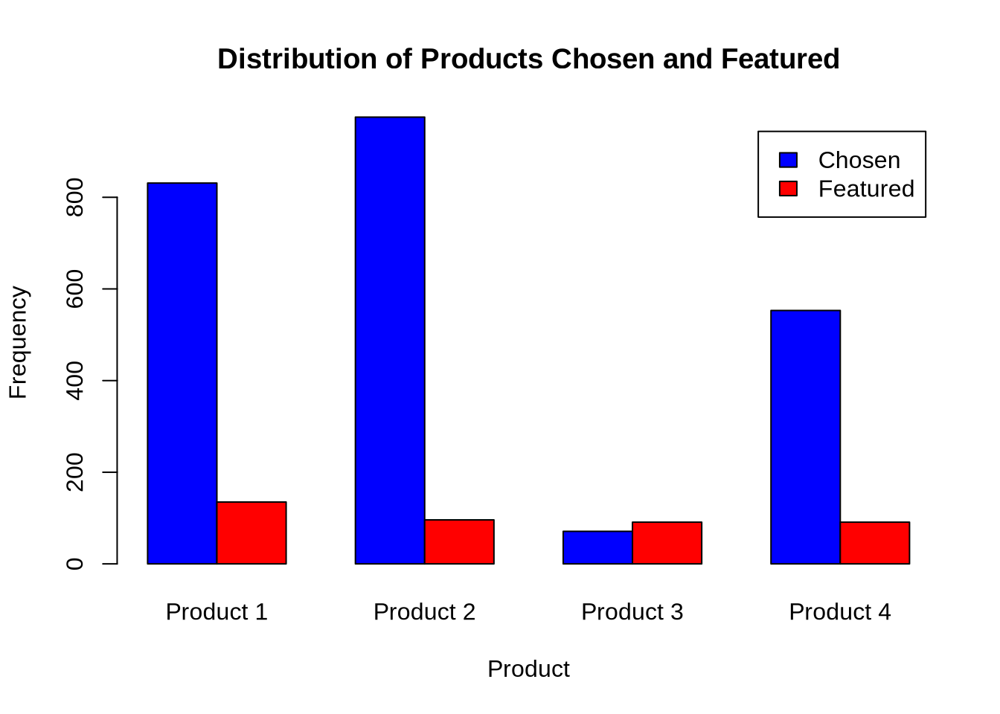
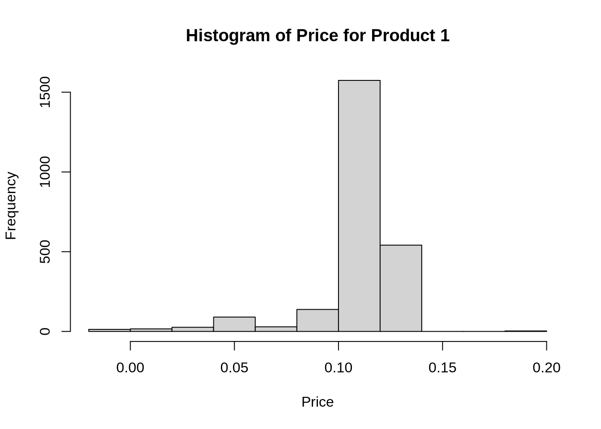
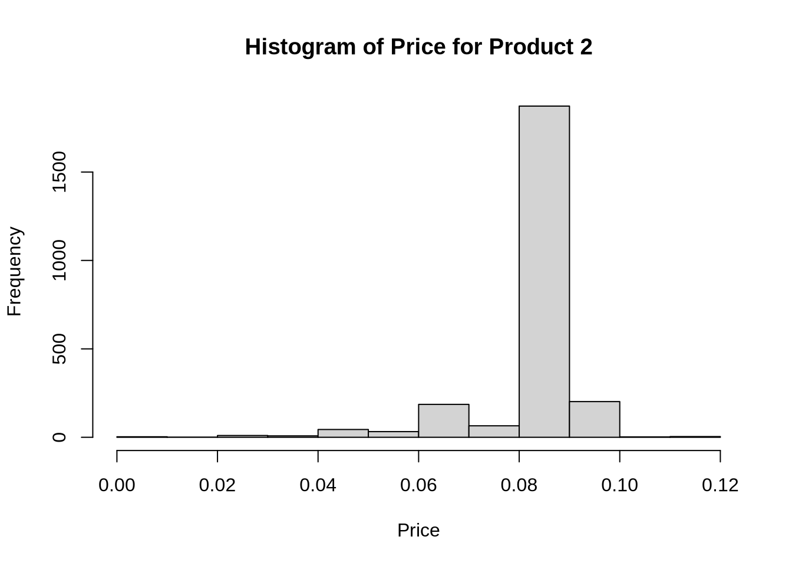
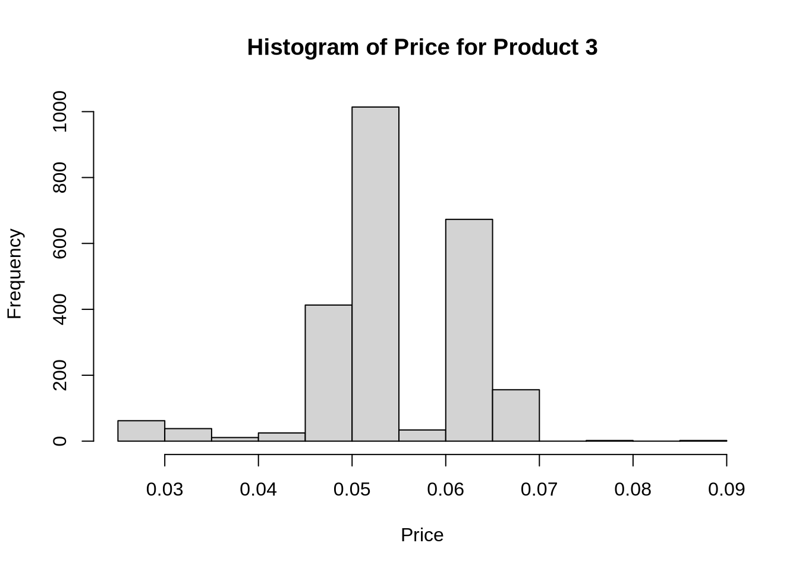
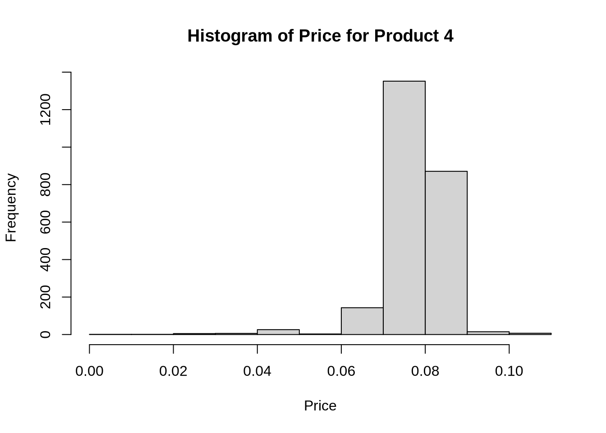

This assignment uses uses the Multi-nomial Logit model to analyze (1) yogurt purchase data made by consumers at a retail location, and (2) conjoint data about consumer preferences for minivans.
1. Estimating Yogurt Preferences
Likelihood for the Multi-nomial Logit (MNL) Model
Suppose we have \(i=1,\ldots,n\) consumers who each select exactly one product \(j\) from a set of \(J\) products. The outcome variable is the identity of the product chosen \(y_i \in \{1, \ldots, J\}\) or equivalently a vector of \(J-1\) zeros and \(1\) one, where the \(1\) indicates the selected product. For example, if the third product was chosen out of 4 products, then either \(y=3\) or \(y=(0,0,1,0)\) depending on how we want to represent it. Suppose also that we have a vector of data on each product \(x_j\) (eg, size, price, etc.).
We model the consumer’s decision as the selection of the product that provides the most utility, and we’ll specify the utility function as a linear function of the product characteristics:
\[ U_{ij} = x_j'\beta + \epsilon_{ij} \]
where \(\epsilon_{ij}\) is an i.i.d. extreme value error term.
The choice of the i.i.d. extreme value error term leads to a closed-form expression for the probability that consumer \(i\) chooses product \(j\):
A clever way to write the individual likelihood function for consumer \(i\) is the product of the \(J\) probabilities, each raised to the power of an indicator variable (\(\delta_{ij}\)) that indicates the chosen product:
We will use the yogurt_data dataset, which provides anonymized consumer identifiers (id), a vector indicating the chosen product (y1:y4), a vector indicating if any products were “featured” in the store as a form of advertising (f1:f4), and the products’ prices (p1:p4). For example, consumer 1 purchased yogurt 4 at a price of 0.079/oz and none of the yogurts were featured/advertised at the time of consumer 1’s purchase. Consumers 2 through 7 each bought yogurt 2, etc.
todo: import the data, maybe show the first few rows, and describe the data a bit.
To begin our analysis, we examine the data set to identify any noticeable trends. The bar plot below illustrates several key observations.
First, in terms of product selection frequency, each product demonstrates distinct levels of popularity. Product 2 was chosen most frequently, with 975 selections, followed by product 1 with 831 selections, product 4 with 553 selections, and notably, product 3 with only 71 selections.
Second, regarding product the frequency of each product being featured, products 2, 3, and 4 were featured approximately 90 times each, while product 1 stood out with 135 features. These initial observations provide valuable insights into the relative popularity and feature exposure of each product, setting the stage for further in-depth analysis.
# frequency of product being chosenP1_chosen <-sum(yogurt_data$y1 ==1)P2_chosen <-sum(yogurt_data$y2 ==1)P3_chosen <-sum(yogurt_data$y3 ==1)P4_chosen <-sum(yogurt_data$y4 ==1)choice_counts <-c(P1_chosen, P2_chosen, P3_chosen, P4_chosen)# frequency of product being featuredP1_featured <-sum(yogurt_data$f1 ==1)P2_featured <-sum(yogurt_data$f2 ==1)P3_featured <-sum(yogurt_data$f3 ==1)P4_featured <-sum(yogurt_data$f4 ==1)feature_counts <-c(P1_featured, P2_featured, P3_featured, P4_featured)# Plotting choice and feature frequencypar(mfrow=c(1,1))combined_counts <-rbind(choice_counts, feature_counts)barplot(combined_counts, beside=TRUE, names.arg=c("Product 1", "Product 2", "Product 3", "Product 4"),xlab="Product", ylab="Frequency", main="Distribution of Products Chosen and Featured",col=c("blue", "red"), legend=c("Chosen", "Featured"))

Lastly, we observe the distribution of price per ounce charged for each product. The frequency plots for each product reveal distinct pricing patterns. Products 1, 2, and 4 exhibit a narrow distribution, with a common price point that dominates their sales. In contrast, product 3 displays a broader distribution, indicating multiple price points at which it is frequently sold. Despite this variability, product 3 was sold less frequently compared to the other products.
# Load the dplyr packagelibrary(dplyr)
Attaching package: 'dplyr'
The following objects are masked from 'package:stats':
filter, lag
The following objects are masked from 'package:base':
intersect, setdiff, setequal, union
# Assuming 'yogurt_data' is the name of your dataframe# Create a copy of the dataframeyogurt_data_copy <-data.frame(yogurt_data)# Convert to numericyogurt_data_copy$p1 <-as.numeric(yogurt_data_copy$p1)yogurt_data_copy$p2 <-as.numeric(yogurt_data_copy$p2)yogurt_data_copy$p3 <-as.numeric(yogurt_data_copy$p3)yogurt_data_copy$p4 <-as.numeric(yogurt_data_copy$p4)# Plot a histogramhist(yogurt_data_copy$p1, main ="Histogram of Price for Product 1", xlab ="Price", ylab ="Frequency")

hist(yogurt_data_copy$p2, main ="Histogram of Price for Product 2", xlab ="Price", ylab ="Frequency")

hist(yogurt_data_copy$p3, main ="Histogram of Price for Product 3", xlab ="Price", ylab ="Frequency")

hist(yogurt_data_copy$p4, main ="Histogram of Price for Product 4", xlab ="Price", ylab ="Frequency")

Let the vector of product features include brand dummy variables for yogurts 1-3 (we’ll omit a dummy for product 4 to avoid multi-collinearity), a dummy variable to indicate if a yogurt was featured, and a continuous variable for the yogurts’ prices:
The “hard part” of the MNL likelihood function is organizing the data, as we need to keep track of 3 dimensions (consumer \(i\), covariate \(k\), and product \(j\)) instead of the typical 2 dimensions for cross-sectional regression models (consumer \(i\) and covariate \(k\)).
What we would like to do is reorganize the data from a “wide” shape with \(n\) rows and multiple columns for each covariate, to a “long” shape with \(n \times J\) rows and a single column for each covariate. As part of this re-organization, we’ll add binary variables to indicate the first 3 products; the variables for featured and price are included in the dataset and simply need to be “pivoted” or “melted” from wide to long.
mnl_ll <-function(beta, X) {# Calculate the utility for each alternative utilities <- X %*% beta# Calculate the log of the sum of exponentials of utilities log_sum_exp_utilities <-log(sum(exp(utilities)))# Calculate the log-likelihood ll <-sum(utilities) -length(utilities) * log_sum_exp_utilitiesreturn(-ll) # Return negative log-likelihood for minimization}
todo: Use optim() in R or optimize() in Python to find the MLEs for the 5 parameters (\(\beta_1, \beta_2, \beta_3, \beta_f, \beta_p\)). (Hint: you should find 2 positive and 1 negative product intercepts, a small positive coefficient estimate for featured, and a large negative coefficient estimate for price.)
# Create covariate matrix XX <-model.matrix(~-1+ y1 + y2 + y3 + featured + price, data=yogurt_long)y <- yogurt_long$choiceout <-optim(par=rep(0, ncol(X)), fn=mnl_ll, X=X, control =list(fnscale=-1))out$par
todo: interpret the 3 product intercepts (which yogurt is most preferred?). We learn based on the parameter estimates from the multinomial logit (MNL) model above that yogurt product 2 (y2) is the most preferred among the three options (y1, y2, y3). This is suggested by the positive coefficient estimate for y2 (\((\beta_2 \approx 696.89\))), indicating that an increase in the characteristics associated with y2 leads to a greater utility compared to y1 and y3. Additionally, the positive coefficient estimate for the featured variable (\((\beta_f \approx 12.20\))) suggests that featuring a yogurt product will further increase its utility to the consumer, although to a lesser extent compared to the characteristics of the yogurts themselves. On the other hand, the negative coefficient estimate for the price variable (\((\beta_p \approx -542.87\))) indicates that as the price of a yogurt increases, its utility decreases, which is consistent with expectations. Overall, based on these estimates, it can be inferred that consumers in this model prefer yogurt y2 over y1 and y3, and that featuring a yogurt positively influences its utility, while higher prices have a negative impact.
todo: use the estimated price coefficient as a dollar-per-util conversion factor. Use this conversion factor to calculate the dollar benefit between the most-preferred yogurt (the one with the highest intercept) and the least preferred yogurt (the one with the lowest intercept). This is a per-unit monetary measure of brand value.
One benefit of the MNL model is that we can simulate counterfactuals (eg, what if the price of yogurt 1 was $0.10/oz instead of $0.08/oz).
todo: calculate the market shares in the market at the time the data were collected. Then, increase the price of yogurt 1 by $0.10 and use your fitted model to predict p(y|x) for each consumer and each product (this should be a matrix of\(N \times 4\) estimated choice probabilities. Take the column averages to get the new, expected market shares that result from the $0.10 price increase to yogurt 1. Do the yogurt 1 market shares decrease?
2. Estimating Minivan Preferences
Data
todo: download the dataset from here: http://goo.gl/5xQObB
todo: describe the data a bit. How many respondents took the conjoint survey? How many choice tasks did each respondent complete? How many alternatives were presented on each choice task? For each alternative. Before fitting our choice model, we first describe the data to better understand what is going on. In the summary below, we see that 200 respondents took the conjoint survey. Each respondent completed 15 choice tasks, with each choice task consisting of 3 alternatives for the respondent to choose from. The alternatives consisted of varying levels of the minivan’s product attributes. The three levels of the seat,eng(ine), andprice product attributes appeared roughly 3000 times for each level, while the two levels for the cargo attribute appeared roughly 4500 times.
summary(minivan)
resp.id ques alt carpool seat cargo
Min. : 1.00 Min. : 1 Min. :1 no :6345 6:3024 2ft:4501
1st Qu.: 50.75 1st Qu.: 4 1st Qu.:1 yes:2655 7:2993 3ft:4499
Median :100.50 Median : 8 Median :2 8:2983
Mean :100.50 Mean : 8 Mean :2
3rd Qu.:150.25 3rd Qu.:12 3rd Qu.:3
Max. :200.00 Max. :15 Max. :3
eng price choice
elec:3010 30:2998 Min. :0.0000
gas :3005 35:2997 1st Qu.:0.0000
hyb :2985 40:3005 Median :0.0000
Mean :0.3333
3rd Qu.:1.0000
Max. :1.0000
The attributes (levels) were number of seats (6,7,8), cargo space (2ft, 3ft), engine type (gas, hybrid, electric), and price (in thousands of dollars).
Most popular attribute levels: - seat = 6 seats - eng = gas powered - price = $30,000 - cargo = 3ft of cargo
xtabs(choice~seat, data = minivan)
seat
6 7 8
1164 854 982
xtabs(choice~eng, data = minivan)
eng
elec gas hyb
608 1444 948
xtabs(choice~price, data = minivan)
price
30 35 40
1486 956 558
xtabs(choice~cargo, data = minivan)
cargo
2ft 3ft
1312 1688
Model
todo: estimate a MNL model omitting the following levels to avoide multicollinearity (6 seats, 2ft cargo, and gas engine). Include price as a continuous variable. Show a table of coefficients and standard errors. You may use your own likelihood function from above, or you may use a function from a package/library to perform the estimation.
minivan2 <-read.csv("~/My_Quarto_Website/projects/project3/rintro-chapter13conjoint.csv",colClasses =c(seat ="factor", choice ="integer", eng ="factor", carpool ="factor", cargo ="factor", alt ="factor"))# Reorder levels to drop 6 seats, 2ft cargo, and gas engine levelsminivan$seat <-relevel(minivan$seat, ref ="6")minivan$cargo <-relevel(minivan$cargo, ref ="2ft")minivan$eng <-relevel(minivan$eng, ref ="gas")# Convert price to numeric (continuous variable)minivan$price <-as.numeric(as.character(minivan$price))# One-hot encode specific columnscolumns <-c("resp.id", "ques", "alt", "carpool", "seat", "eng","price", "choice")minivan2 <-model.matrix(~ . -1, data = minivan[,columns])# Convert minivan2 to a data frameminivan2_df <-as.data.frame(minivan2)# Create covariate matrix XX2 <-model.matrix(~-1+ carpoolyes + seat7 + seat8 + engelec + enghyb + price, data=minivan2_df)y2 <- minivan2_df$choice# Optimize the log-likelihood functionout <-optim(par =rep(1, ncol(X2)), fn = mnl_ll, X = X2, control =list(fnscale =-1), hessian =TRUE)# Calculate standard errorscov_matrix <-solve(-out$hessian)standard_errors <-sqrt(diag(cov_matrix))
Warning in sqrt(diag(cov_matrix)): NaNs produced
# Create a table of parameter values with beta's and standard errorsparam_table <-data.frame(parameter =colnames(X2),beta = out$par,se = standard_errors)# Print the parameter table with standard errorsprint(param_table)
parameter beta se
1 carpoolyes 2718.4289 NaN
2 seat7 -1243.7731 NaN
3 seat8 -1457.5052 0
4 engelec 243.5506 0
5 enghyb 1409.2931 NaN
6 price -162.4070 0
Results
todo: Interpret the coefficients. Which features are more preferred? Using the parameters from our model, we see that consumers most prefer minians with 6 seats and a hybrid engine.
todo: Use the price coefficient as a dollar-per-util conversion factor. What is the dollar value of 3ft of cargo space as compared to 2ft of cargo space?
todo: assume the market consists of the following 6 minivans. Predict the market shares of each minivan in the market.